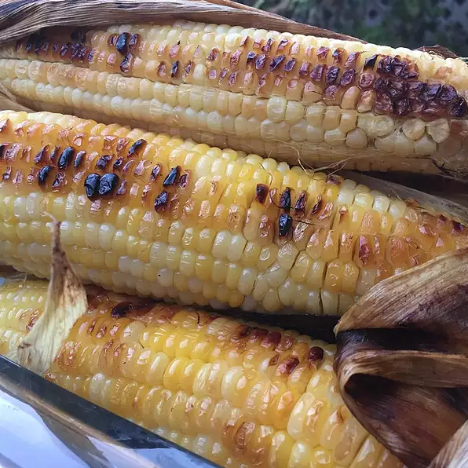

Grilled Corn Recipe

Description
Grilled corn on the cob is easy and perfect for every summer barbecue. With foil, butter, salt, and a little pepper, the corn will be perfectly tender and sweet.
Ingredients
- 6 ears corn
- 6 tablespoons butter, softened
- salt
- ground black pepper
Steps
- Preheat an outdoor grill for high heat and lightly oil grate.
- Peel back corn husks and remove silk. Place 1 tablespoon butter, salt and pepper on each piece of corn. Close husks.
- Wrap each ear of corn tightly in aluminum foil.
- Cook on the preheated grill, turning occasionally, until tender, about 30 minutes.